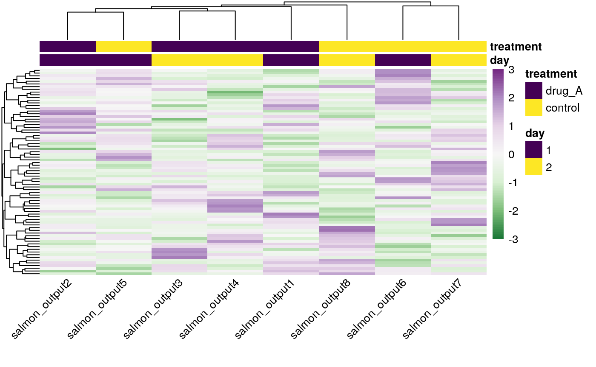
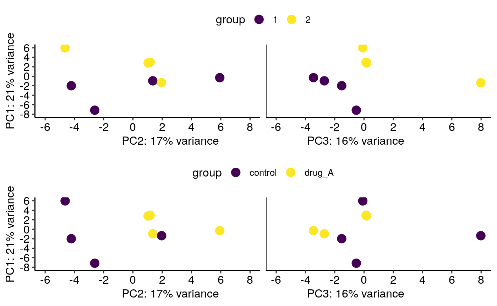
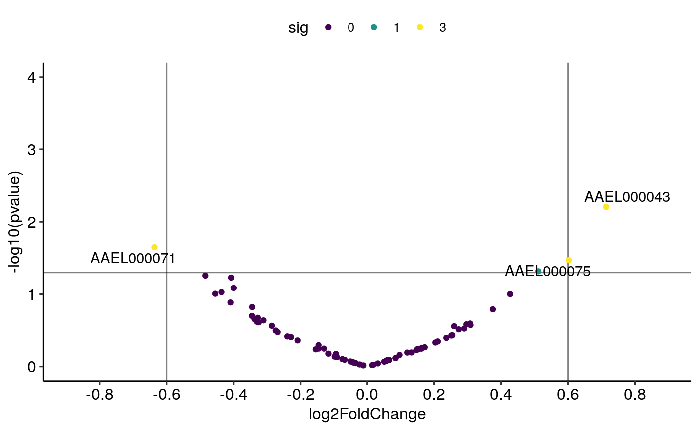
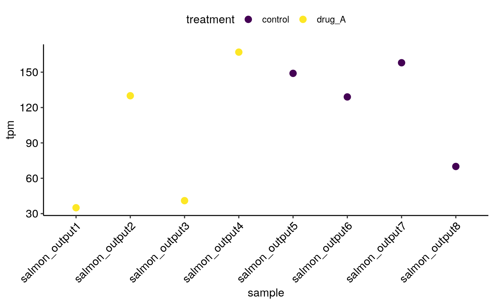

vignettes/using_txomics.Rmd
using_txomics.RmdSalmon usually outputs a quant.sf file, you should input the path to folder containing this file to import_tx() function.
path_to_files <- "temp_test/quants/"
imported_expression <- import_tx(path_to_files,source = "salmon", accession = "vectorbase")
#> Using files:
#> temp_test/quants/salmon_output1/quant.sf
#> temp_test/quants/salmon_output2/quant.sf
#> temp_test/quants/salmon_output3/quant.sf
#> temp_test/quants/salmon_output4/quant.sf
#> temp_test/quants/salmon_output5/quant.sf
#> temp_test/quants/salmon_output6/quant.sf
#> temp_test/quants/salmon_output7/quant.sf
#> temp_test/quants/salmon_output8/quant.sf
#> Parsed with column specification:
#> cols(
#> Name = col_character(),
#> Length = col_double(),
#> EffectiveLength = col_double(),
#> TPM = col_double(),
#> NumReads = col_double()
#> )
#> reading in files with read_tsv
#> 1 2 3 4 5 6 7 8
#> summarizing abundance
#> summarizing counts
#> summarizing length
imported_expression$abundance %>%
head() %>%
knitr::kable()| salmon_output1 | salmon_output2 | salmon_output3 | salmon_output4 | salmon_output5 | salmon_output6 | salmon_output7 | salmon_output8 | |
|---|---|---|---|---|---|---|---|---|
| AAEL000001 | 142 | 37 | 50 | 44 | 73 | 54 | 84 | 26 |
| AAEL000004 | 77 | 78 | 83 | 120 | 60 | 90 | 92 | 49 |
| AAEL000005 | 433 | 295 | 270 | 341 | 285 | 306 | 315 | 194 |
| AAEL000006 | 46 | 100 | 94 | 73 | 107 | 106 | 63 | 140 |
| AAEL000008 | 307 | 298 | 249 | 259 | 265 | 233 | 259 | 315 |
| AAEL000010 | 204 | 121 | 114 | 154 | 40 | 95 | 59 | 41 |
We need to have a sample table, or experimental design table, with description for each sample
sample_table <- dplyr::data_frame(
sample = colnames(imported_expression$abundance),
treatment = c(rep("drug_A",4),rep("control",4)),
day = as.character(c(1,1,2,2,1,1,2,2))
)
sample_table %>%
knitr::kable()| sample | treatment | day |
|---|---|---|
| salmon_output1 | drug_A | 1 |
| salmon_output2 | drug_A | 1 |
| salmon_output3 | drug_A | 2 |
| salmon_output4 | drug_A | 2 |
| salmon_output5 | control | 1 |
| salmon_output6 | control | 1 |
| salmon_output7 | control | 2 |
| salmon_output8 | control | 2 |
de_results <- imported_expression %>%
de_analysis(sample_table, contrast_var = "treatment", "drug_A", "control")
#> Warning in DESeqDataSet(se, design = design, ignoreRank): some variables in
#> design formula are characters, converting to factors
#> using counts and average transcript lengths from tximport
#> estimating size factors
#> using 'avgTxLength' from assays(dds), correcting for library size
#> estimating dispersions
#> gene-wise dispersion estimates
#> mean-dispersion relationship
#> final dispersion estimates
#> fitting model and testing
de_results %>%
dplyr::arrange(pvalue) %>%
head() %>%
knitr::kable()| gene | baseMean | log2FoldChange | lfcSE | stat | pvalue | padj |
|---|---|---|---|---|---|---|
| AAEL000043 | 89.68506 | 0.7137937 | 0.2608504 | 2.736410 | 0.0062114 | 0.4720631 |
| AAEL000071 | 99.84505 | -0.6362684 | 0.2784497 | -2.285039 | 0.0223105 | 0.7451870 |
| AAEL000075 | 72.27185 | 0.6023182 | 0.2838283 | 2.122122 | 0.0338275 | 0.7451870 |
| AAEL000109 | 99.32454 | 0.5111775 | 0.2586498 | 1.976331 | 0.0481173 | 0.7451870 |
| AAEL000097 | 118.96447 | -0.4843116 | 0.2525720 | -1.917519 | 0.0551720 | 0.7451870 |
| AAEL000041 | 266.07772 | -0.4071233 | 0.2154710 | -1.889458 | 0.0588306 | 0.7451870 |
gsea_results <- de_results %>%
gsea_analysis(gene_sets = go_gene_sets)
gsea_results %>%
dplyr::arrange(pvalue) %>%
head() %>%
knitr::kable()| pathway | pvalue | padj | ES | NES | nMoreExtreme | size | leading_edge |
|---|---|---|---|---|---|---|---|
| GO:0005549_odorant binding | 0.0234613 | 0.458827 | -0.8185600 | -1.546642 | 1284 | 4 | c(“AAEL000071”, “AAEL000073”) |
| GO:0005737_cytoplasm | 0.0424601 | 0.458827 | 0.9189189 | 1.432043 | 2028 | 2 | c(“AAEL000109”, “AAEL000108”) |
| GO:0016051_carbohydrate biosynthetic process | 0.0513588 | 0.458827 | -0.9866667 | -1.309829 | 2556 | 1 | AAEL000097 |
| GO:0004970_ionotropic glutamate receptor activity | 0.0545154 | 0.458827 | -0.7318364 | -1.481819 | 3004 | 5 | c(“AAEL000011”, “AAEL000063”, “AAEL000089”, “AAEL000066”) |
| GO:0008152_metabolic process | 0.0715900 | 0.458827 | 0.8918919 | 1.389924 | 3420 | 2 | c(“AAEL000109”, “AAEL000101”) |
| GO:0000287_magnesium ion binding | 0.0788609 | 0.458827 | 0.9733333 | 1.292307 | 3959 | 1 | AAEL000109 |

multiplot(
plot_pca(imported_expression, sample_table, color_by = "day"),
plot_pca(imported_expression, sample_table, color_by = "treatment")
)


sessionInfo()
#> R version 3.5.1 (2018-07-02)
#> Platform: x86_64-pc-linux-gnu (64-bit)
#> Running under: Debian GNU/Linux 9 (stretch)
#>
#> Matrix products: default
#> BLAS: /usr/lib/openblas-base/libblas.so.3
#> LAPACK: /usr/lib/libopenblasp-r0.2.19.so
#>
#> locale:
#> [1] LC_CTYPE=en_US.UTF-8 LC_NUMERIC=C
#> [3] LC_TIME=en_US.UTF-8 LC_COLLATE=en_US.UTF-8
#> [5] LC_MONETARY=en_US.UTF-8 LC_MESSAGES=C
#> [7] LC_PAPER=en_US.UTF-8 LC_NAME=C
#> [9] LC_ADDRESS=C LC_TELEPHONE=C
#> [11] LC_MEASUREMENT=en_US.UTF-8 LC_IDENTIFICATION=C
#>
#> attached base packages:
#> [1] stats graphics grDevices utils datasets methods base
#>
#> other attached packages:
#> [1] bindrcpp_0.2.2 txomics_0.1.9
#>
#> loaded via a namespace (and not attached):
#> [1] bitops_1.0-6 matrixStats_0.54.0
#> [3] fs_1.2.6 bit64_0.9-7
#> [5] RColorBrewer_1.1-2 rprojroot_1.3-2
#> [7] GenomeInfoDb_1.18.0 tools_3.5.1
#> [9] backports_1.1.2 R6_2.3.0
#> [11] rpart_4.1-13 Hmisc_4.1-1
#> [13] DBI_1.0.0 lazyeval_0.2.1
#> [15] BiocGenerics_0.28.0 colorspace_1.3-2
#> [17] nnet_7.3-12 tidyselect_0.2.5
#> [19] gridExtra_2.3 DESeq2_1.22.0
#> [21] bit_1.1-14 compiler_3.5.1
#> [23] Biobase_2.42.0 htmlTable_1.12
#> [25] xml2_1.2.0 desc_1.2.0
#> [27] DelayedArray_0.8.0 labeling_0.3
#> [29] scales_1.0.0 checkmate_1.8.5
#> [31] readr_1.2.1 genefilter_1.64.0
#> [33] pkgdown_1.3.0 commonmark_1.7
#> [35] stringr_1.3.1 digest_0.6.18
#> [37] foreign_0.8-70 rmarkdown_1.11
#> [39] XVector_0.22.0 base64enc_0.1-3
#> [41] pkgconfig_2.0.2 htmltools_0.3.6
#> [43] highr_0.7 htmlwidgets_1.3
#> [45] rlang_0.3.0.1 rstudioapi_0.8
#> [47] RSQLite_2.1.1 bindr_0.1.1
#> [49] jsonlite_1.6 BiocParallel_1.16.0
#> [51] acepack_1.4.1 dplyr_0.7.8
#> [53] RCurl_1.95-4.11 magrittr_1.5
#> [55] GenomeInfoDbData_1.2.0 Formula_1.2-3
#> [57] Matrix_1.2-14 Rcpp_1.0.0
#> [59] munsell_0.5.0 S4Vectors_0.20.0
#> [61] viridis_0.5.1 stringi_1.2.4
#> [63] yaml_2.2.0 MASS_7.3-50
#> [65] SummarizedExperiment_1.12.0 zlibbioc_1.28.0
#> [67] plyr_1.8.4 grid_3.5.1
#> [69] blob_1.1.1 ggrepel_0.8.0
#> [71] parallel_3.5.1 crayon_1.3.4
#> [73] lattice_0.20-35 splines_3.5.1
#> [75] annotate_1.60.0 hms_0.4.2
#> [77] locfit_1.5-9.1 knitr_1.20
#> [79] pillar_1.3.0 ggpubr_0.2
#> [81] fgsea_1.8.0 GenomicRanges_1.34.0
#> [83] reshape2_1.4.3 geneplotter_1.60.0
#> [85] stats4_3.5.1 fastmatch_1.1-0
#> [87] XML_3.98-1.16 glue_1.3.0
#> [89] evaluate_0.12 latticeExtra_0.6-28
#> [91] data.table_1.11.8 tidyr_0.8.2
#> [93] gtable_0.2.0 purrr_0.2.5
#> [95] assertthat_0.2.0 ggplot2_3.1.0
#> [97] dendsort_0.3.3 xtable_1.8-3
#> [99] roxygen2_6.1.1 viridisLite_0.3.0
#> [101] survival_2.42-3 pheatmap_1.0.11
#> [103] tibble_1.4.2 AnnotationDbi_1.44.0
#> [105] memoise_1.1.0 IRanges_2.16.0
#> [107] tximport_1.10.0 cluster_2.0.7-1